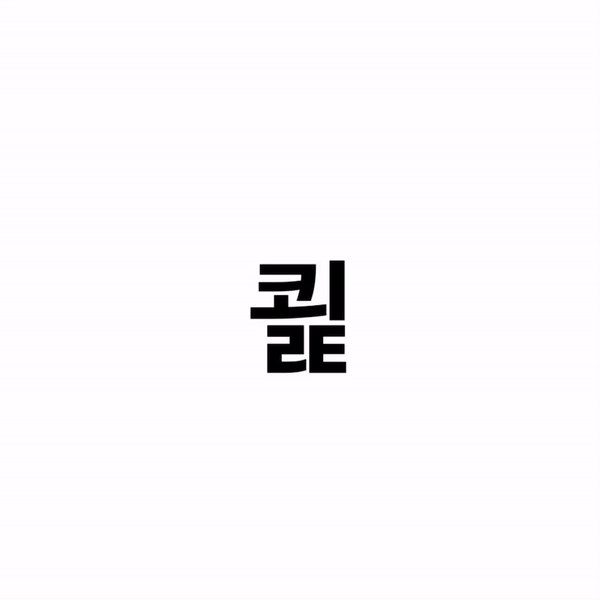

SEJIN OH
VISUAL PROGRAMMER | INTERACTION DESIGNER
MEDIA ART.
Wave Of Heart


Interactive Media Art.
Sound Interaction + Live Projection Mapping
세종시 조치원 문화정원 전시
"수담"
Instagram
WEB DESIGN & DEVELOPE.
Recruit 2022 Interacive Page

Interacive Web Poster
Recruit 2022 Open Source Lab
모바일 기기의 기울기 센서를 이용한 웹 포스터
Recruit 2022 WEB Poster
Braun Turntable Animation
Interactive Web Animation.
BRAUN SK4 TURNTABLE | Radio-phonograph combination in 1956 by
the company Braun.
Illustration Design + Programing by svg animation.
DEMO WEBSITE
Freitag Brand Promotion

Interactive Brand Promotion.
FREITAG | unique process of the freitag products.
Graphic
Design + Programing by Processing + 3D Modeling
Instagram
The1975 Live Album Page
Live Album Cover Website.
THE 1975 | Frail State of my mind.
live typography artwork
by p5.js
DEMO WEBSITE
Hangeul Mobile Typo
Interactive Typography.
HANGEUL | Korean traditional Language.
live typography artwork
by p5.js
GO TO WEBSITE
Open Source Lab Canvas
Web Design + p5.js Develope.
Open Source Lab | Hongik univ. interactive media art crew
Open Source Lab
VISUAL PROGRMMING.
Acceleration Typography

Interactive Typography Experiment.
Mobile Acceleration Interaction by p5.js
Mobile Typo
Data wave

Interactive Motion Graphics.
inspired by Flowfield Algorithm
Sine bpm

Generative Motion Graphics.
inspired by Sine Wave Algorithm